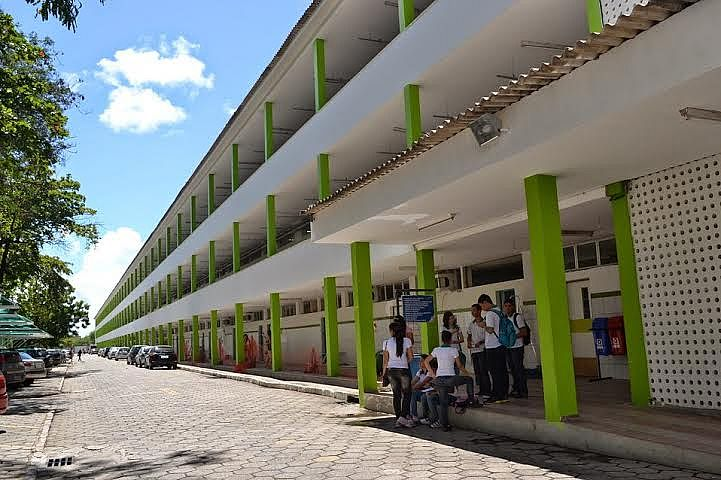

IFAL anuncia mudanças para o processo seletivo 2021
Mudança foi aprovada pelo Colégio de Dirigentes em virtude da pandemia do novo coronavírus.
Acessar notícia

IFAL realiza seleções complementares para atuar no Pibid e Residência Pedagógica
Pleitos são voltados a docentes e alunos das áreas de Biologia, Letras, Química e Matemática.
Acessar notíciaMundo do trabalho no pós-pandemia é debatido no terceiro dia da Reditec 2020
Especialistas discutem sobre tendências aceleradas este ano e o papel da Rede Federal na formação de profissionais preparados para enfrentar os novos contextos.
Acessar notícia